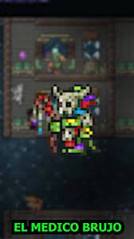

Después de derrotar a Plantera
Después de derrotar a Plantera
Después de derrotar a Plantera
Después de derrotar a Plantera
Después de derrotar a Plantera
Después de derrotar a Plantera
Después de derrotar a Plantera
Después de derrotar a Plantera
El médico brujo es un NPC vendedor que se mudará luego de derrotar a la abeja reina. Éste venderá objetos típicos de los chamanes.
El medico brujo |
|
 |
|
Estadisticas |
|
Tipo |
NPC |
Salud |
250 |
Arma |
Cerbatana |
Defensa |
15 |
Especialidad |
Venta de estación de imbuición, objetos de invocador y fuentes |
Bestiario |
|
Descripcion |
Es inusual para un Lihzahrd estar fuera del templo. Incluso mas inusual son las cosas vudú que él vende. Él prefiere sus cuevas en la selva |
Bioma preferido |
La selva |
IDs internas |
|
ID de bestiario |
228 |
ID de NPC |
15 |
Cuando hay fiesta:
Cuando se derrotó el nivel 1 del ejército del Antiguo:
| Objeto | Precio | Disponibilidad |
|---|---|---|
| Estación de imbuición | 7 |
Siempre disponible |
| Cerbatana | 5 |
Siempre disponible |
| Máscara tiki | 50 |
Después de derrotar a Plantera |
| Camisa tiki | 50 |
Después de derrotar a Plantera |
| Pantalones tiki | 50 |
Después de derrotar a Plantera |
| Collar pigmeo | 20 |
Solo si es de noche |
| Escarabajo Hércules | 40 |
Después de derrotar a Plantera, si este vive en la selva |
| Vial de ponzoña | 10 |
Al haber derrotado a Plantera |
| Tótem tiki | 2 |
Tener una casa en la selva |
| Caldero | 1 |
Durante Halloween |
| Alas de hoja | 75 |
En la noche, tener su casa en la selva en modo difícil Al haber derrotado a Plantera |
| Proyectil Stynger | 75 |
Tener una Stynger en el inventario |
| Estaca | 75 |
Tener una lanzaestacas en el inventario |
| Fuente de agua pura | 4 |
Siempre disponible Después de derrotar a Plantera |
| Fuente del desierto | 4 |
Siempre disponible Después de derrotar a Plantera |
| Fuente de la selva | 4 |
Siempre disponible Después de derrotar a Plantera |
| Fuente de agua helada | 4 |
Siempre disponible Después de derrotar a Plantera |
| Fuente de agua corrupta | 4 |
Siempre disponible Después de derrotar a Plantera |
| Fuente de agua carmesí | 4 |
Siempre disponible Después de derrotar a Plantera |
| Fuente de agua sagrada | 4 |
Siempre disponible Después de derrotar a Plantera |
| Fuente de agua sangrienta | 4 |
Siempre disponible Después de derrotar a Plantera |
| Mesa cautivadora |
10 |
Si el Mago esta presente |